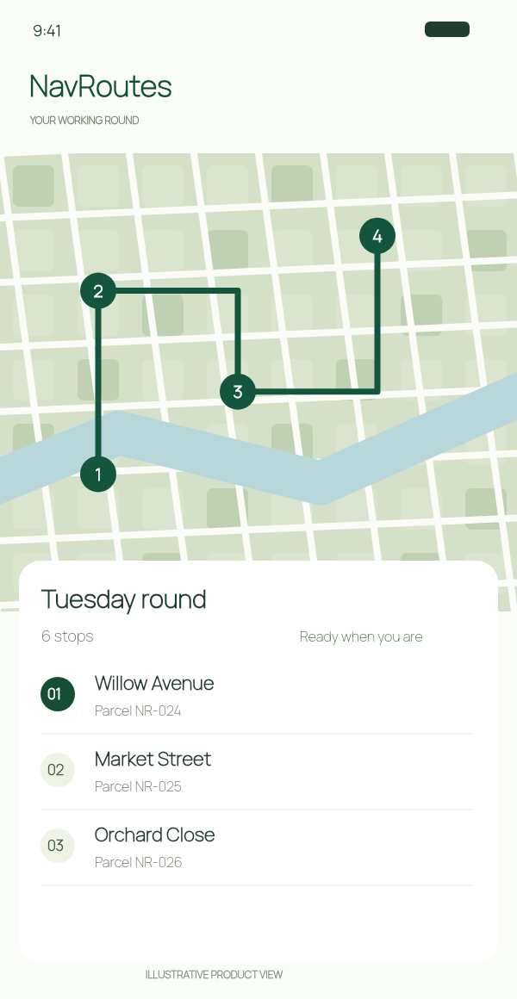

Ippjana r-rotta kollha
Żid il-bidu, waqfiet tal-kunsinna fl-ordni u d-destinazzjoni. Ottimizza mill-ġdid il-waqfiet li fadal meta jinbidel il-pjan.
NAVROUTES GĦALL-IPHONE / GĦAS-SEWWIEQA U L-KURRIERI
Inqas ittajpjar. Aktar kunsinni.
Ibdel id-dokumenti tal-kunsinna f’waqfiet u dettalji tal-pakketti bl-IA fuq iPhones kompatibbli. Ottimizza r-rotta u żomm in-noti u r-ritratti ma’ kull waqfa.

GĦODOD GĦAR-ROTA KOLLHA TAL-KUNSINJI
NavRoutes jiġbor flimkien il-kompiti prattiċi ta’ rotta tal-kunsinna, mill-ewwel indirizz sal-ħarsa ġenerali ta’ wara.
Żid il-bidu, waqfiet tal-kunsinna fl-ordni u d-destinazzjoni. Ottimizza mill-ġdid il-waqfiet li fadal meta jinbidel il-pjan.
Skennja lista tal-kunsinni jew agħżel ritratt ta’ paġna. Fuq iPhones kompatibbli, l-IA toħroġ l-indirizzi u d-dettalji marbuta biex tiċċekkjahom qabel l-importazzjoni.
Numri tal-pakketti, riċevituri, kwantitajiet u istruzzjonijiet jibqgħu ma’ kull waqfa. Żid ritratti tal-pakketti u prova tal-kunsinna.
Ara l-ħinijiet tal-wasla ppjanati, irreġistra kunsinni kompluti, falluti jew differiti u esporta rapporti appoġġjati bħala PDF jew CSV.
L-estrazzjoni ta’ dokumenti bl-IA teħtieġ iOS 26 jew aktar ġdid, iPhone kompatibbli ma’ Apple Intelligence, il-funzjoni mixgħula u mudell disponibbli. Iċċekkja d-dettalji qabel l-importazzjoni.
SKENNJA LISTI TAL-KUNSINJI BL-IA
Skennja lista tal-kunsinni jew agħżel ritratt ta’ paġna. Fuq iPhones kompatibbli, NavRoutes juża IA fuq l-apparat biex joħroġ indirizzi, riċevituri, numri tal-pakketti u istruzzjonijiet. Iċċekkja r-riżultati fuq il-mappa qabel tikkonferma l-waqfiet. Rekwiżiti għall-iskannjar bl-IA.
L-estrazzjoni ta’ dokumenti bl-IA teħtieġ iOS 26 jew aktar ġdid, iPhone kompatibbli ma’ Apple Intelligence, il-funzjoni mixgħula u mudell disponibbli. Iċċekkja d-dettalji qabel l-importazzjoni.
Mistoqsijiet
Iva. Ippjana sa 10 indirizzi fuq iPhone, inkluż il-bidu u d-destinazzjoni. Ara l-abbonamenti u l-prezzijiet lokali attwali fl-app.
Skennja paġna jew agħżel immaġni. Fuq iPhones kompatibbli, l-IA fuq l-apparat toħroġ id-dettalji tal-kunsinna. Iċċekkja l-indirizzi qabel tikkonferma.
IR-ROTA LI JMISS TAL-KUNSINJI, ORGANIZZATA
Niżżel NavRoutes għall-iPhone. Skennja l-indirizzi, ippjana r-rotta u żomm id-dettalji tal-kunsinna flimkien.